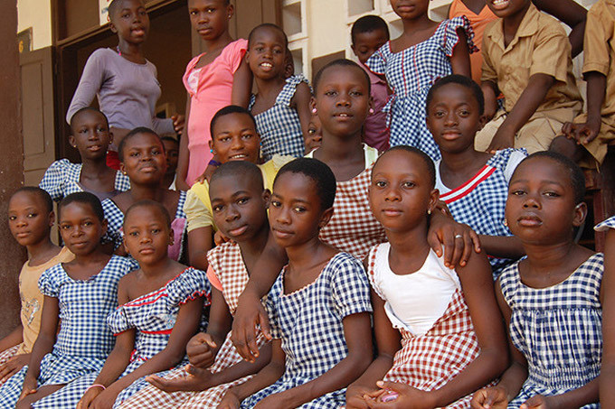

Sustainable Development Goal 3 and Its Aims

Sustainable Development Goal 3 of the 2030 Agenda for Sustainable Development aims to "ensure healthy lives and promote well-being for all at all ages." This goal includes several targets, such as reducing the global maternal mortality ratio, preventing deaths of newborns and children, ending epidemics of AIDS, tuberculosis, malaria, and other communicable diseases, lowering mortality from non-communicable diseases, enhancing the prevention and treatment of substance abuse, halving the number of deaths and injuries from road traffic accidents, ensuring universal access to sexual and reproductive health-care services, achieving universal health coverage, and decreasing deaths and illnesses caused by hazardous chemicals and pollution.
Efforts During the MDG Era and Before
To achieve the maternal and child health Millennium Development Goals (MDGs), UN Secretary-General Ban Ki-moon launched the Every Woman Every Child initiative at the United Nations Millennium Development Goals Summit in September 2010.  This global movement mobilizes international and national action by governments, multilateral organizations, the private sector, and civil society to tackle major health challenges faced by women and children worldwide. The movement operationalizes the Global Strategy for Women and Children's Health, providing a roadmap to enhance financing, strengthen policies, and improve services for the most vulnerable women and children.
The Commission on Sustainable Development treated health and sustainable development as interconnected issues in its multi-year work program. Health and Sustainable Development were also key themes at the World Summit on Sustainable Development held in Johannesburg in 2002. The Summit's outcome document, the Johannesburg Plan of Implementation, dedicates Chapter 6 to Health and Sustainable Development. It asserts that people are entitled to healthy, productive lives in harmony with nature and that sustainable development goals can only be achieved without a high prevalence of debilitating diseases. Achieving health gains for the entire population requires poverty eradication.